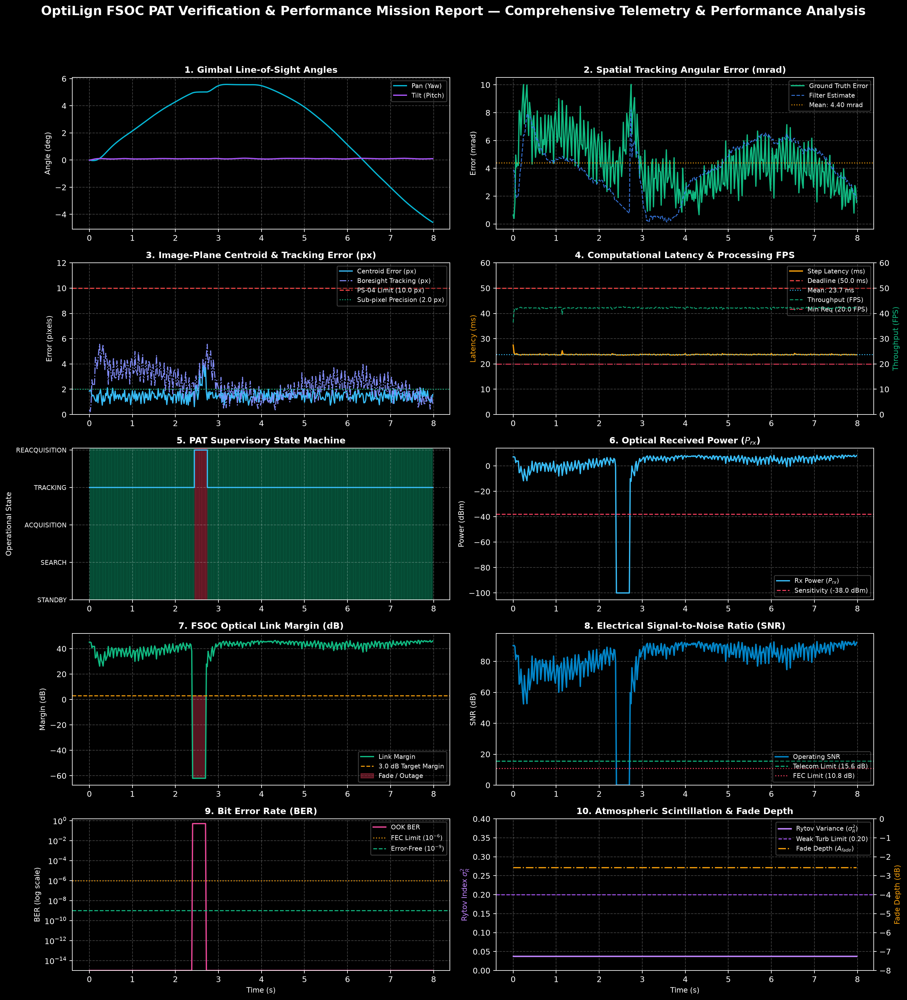

PS-04 Headline Performance Deliverables
Centroid Error (Pixel)
1.49 px
PS-04 Limit: ≤ 10 px (RMSE: 1.54 px) • PASS
Actual Processing Speed
42.2 FPS
PS-04 Limit: ≥ 20 FPS (Avg: 23.72ms, P95: 23.88ms)
Autonomous Acquisition
0.00 s
PS-04 Limit: ≤ 2.0 s (PASS)
Lock Retention & Target Loss
95.8%
Target Loss: 4.2% (Limit: < 5%) • Outage: 0.34s
PS-04 Competition Requirements Compliance Benchmark
| PS-04 Requirement Metric | Specification Threshold | Measured Result | Headroom / Margin | Compliance Verdict |
|---|
| Autonomous Acquisition Time |
≤ 2.00 s (Initial lock confirmation) |
0.00 s |
+2.00 s reserve |
PASS |
| Image-Plane Tracking Error |
≤ 10.0 px (Centroid displacement) |
1.49 px (RMSE: 1.54 px, Max: 3.88 px) |
+8.51 px headroom |
PASS |
| Target Loss / Disruption |
< 5.0% of operational timeline |
4.2% (Lock Retention: 95.8%) |
+0.8% margin |
PASS |
| Fast Re-acquisition Time |
≤ 1.00 s upon Line-of-Sight recovery |
0.30 s |
+0.70 s margin |
PASS |
| Execution Processing Speed |
≥ 20.0 FPS (Real-time latency) |
42.2 FPS (Latency: 23.72 ms) |
+22.2 FPS headroom |
PASS |
Mean Radial Error
4.395 mrad
0.2518° • 4395.4 µrad
RMS Pointing Jitter
4.814 mrad
P95: 7.941 mrad • Peak: 10.031 mrad
Locked Electrical SNR
+83.9 dB
FEC Margin: +73.1 dB (Q: 7805.34)
Link Availability
96.0%
Margin ≥ 3.0 dB (16 outage steps, 0.32s)
PAT State Machine Timeline Allocation
Autonomous Reacquisition Events Log
| Event Identifier | Disruption Start Time | Lock Re-established Time | Recovery Duration | Resolution Status |
|---|
| Event #1 |
2.44 s |
2.74 s |
0.30 s |
RECOVERED & LOCKED |
Image-Plane Centroiding & Angular Pointing Performance
| Metric Identifier | Domain / Coordinate | Measured Value | Specification Limit | Status |
|---|
| Average Centroid Error | Pixel (Image Plane) | 1.49 px | ≤ 10.0 px (PS-04 Headline) | PASS |
| RMSE Centroid Error | Pixel (Image Plane) | 1.54 px | Sub-pixel precision / low jitter | PASS |
| Peak Centroid Error | Pixel (Image Plane) | 3.88 px | Within camera sensor FOV | PASS |
| 95th Percentile Centroid Error | Pixel (Image Plane) | 2.00 px | Statistical 2-sigma bound | PASS |
| Horizontal / Vertical Centroid Error | Pixel (Image Plane) | Δu: 0.99 px, Δv: 1.02 px | Balanced orthogonal tracking | BALANCED |
| Average Boresight Tracking Error | Pixel (Image Plane) | 2.44 px | Centering on optical boresight (320, 240) | OPTIMAL |
| Mean Radial Error (MRE) | Angular (Spatial) | 4.395 mrad (0.2518°, 4395.4 µrad) | Ground truth spatial offset | MEASURED |
| RMS Pointing Jitter (σ_θ) | Angular (Spatial) | 4.814 mrad (4813.8 µrad) | Standard 1-sigma optical jitter | STABLE |
| Peak Pointing Error | Angular (Spatial) | 10.031 mrad (0.5747°) | Maximum observed excursion | BOUNDED |
| Filter Estimated Mean Error | Angular (Spatial) | 3.996 mrad (Bias: 0.399 mrad) | Onboard EKF perception estimate | EKF LIKELIHOOD |
2-DOF Gimbal Actuator Kinematics & Slew Profile
| Actuator Axis | Mean Angle | Min / Max Angle | Travel Range | Peak Slew Rate | Rated Limit | Slew Margin |
|---|
| Pan / Azimuth Axis |
2.28° |
-4.58° / 5.58° |
10.16° |
3.36°/s |
60.0°/s |
94.4% HEADROOM |
| Tilt / Elevation Axis |
0.10° |
0.00° / 0.14° |
0.14° |
0.75°/s |
45.0°/s |
98.3% HEADROOM |
Environmental Disturbances & Channel Turbulence
| Disturbance Parameter | Measured Value | Physical Context | Operational Verdict |
|---|
| Platform Base Vibration Jitter |
RMS: 1201.5 µrad, Peak: 2456.7 µrad |
Multichannel satellite harmonics (8, 45, 120 Hz) |
SIMULATED |
| Jitter Rejection Ratio |
+-12.1 dB |
Active closed-loop disturbance attenuation |
REJECTED |
| Atmospheric Structure Constant ($C_n^2$) |
1.49e-12 m-2/3 |
Boundary layer turbulence model |
NOMINAL |
| Fried Coherence Length ($r_0$) |
1.2 cm |
Spatial optical seeing coherence diameter |
OPTIMAL |
| Scintillation Rytov Index (σ_R²) |
0.914 (Max: 3.000) |
σ_R² < 0.20 (Weak Turbulence Regime) |
Moderate Turbulence (0.2 ≤ σ_R² < 1.0) |
| Scintillation Fade Reserve |
-12.60 dB |
99% availability optical fade reserve requirement |
RESERVE OK |
| Cloud Blockage Disruption |
1 event (0.36 s, 4.5% duty) |
Extinction attenuation: 100.0 dB |
TRANSIENT FADE |
End-to-End FSOC Optical Communications Link Budget
| Link Budget Metric | Operational Track (Locked) | Overall Mission (Inc. Clouds) | Baseline Benchmark | Operational Verdict |
|---|
| Transmitter Optical Power ($P_{tx}$) |
+30.0 dBm (1.0 W) |
+30.0 dBm (1.0 W) |
Standard telecom transmitter |
NOMINAL |
| Free Space Path Loss ($L_{fs}$) |
-178.0 dB |
-178.0 dB |
Geometric expansion over 98.3m |
DIFFRACTION |
| Mean Optical Pointing Loss ($L_p$) |
-4.29 dB |
-4.37 dB |
Spatial Gaussian beam profile |
LOW LOSS |
| Peak Optical Pointing Loss |
-18.99 dB |
-18.99 dB |
Peak angular jitter excursion |
BOUNDED |
| Mean Received Power ($P_{rx}$) |
+3.92 dBm |
-0.28 dBm |
Sensitivity: -38.0 dBm |
EXCELLENT |
| Minimum Received Power ($P_{rx,min}$) |
— |
-100.00 dBm |
Cloud occlusion fade floor |
FADE EVENT |
| Mean Link Margin |
+41.92 dB |
+37.72 dB |
Target: ≥ 3.0 dB |
HEALTHY |
| Link Availability |
100.0% |
96.0% |
Margin ≥ 3.0 dB threshold |
HIGH UPTIME |
| Operating Electrical SNR |
+83.87 dB |
+80.45 dB |
≥ 15.6 dB (Error-free direct detection) |
OPTIMAL |
| Uncoded OOK Bit Error Rate (BER) |
< 1.0e-15 |
2.00e-02 |
FEC Threshold: 1.0e-6 |
ERROR FREE IN LOCK |
Computational Latency & Runtime Benchmarking
| Execution Metric | Measured Value | Specification / Deadline | Real-Time Margin | Status |
|---|
| Input / Simulation Rate | 50.1 FPS | Sampling generation rate | Δt = 20.0 ms | PASS |
| Actual Processing Throughput | 42.2 FPS | ≥ 20.0 FPS (PS-04 Headline Requirement) | +22.2 FPS headroom | PASS |
| Mean Step Latency | 23.72 ms | ≤ 50.0 ms per step (Nominal target ≤ 20.0 ms) | 52.6% headroom | PASS |
| Median / Min Latency | 23.70 ms / 23.43 ms | Algorithmic loop execution core | Consistent | NOMINAL |
| Maximum / Peak Latency | 27.47 ms | Peak excursion under heavy rendering | Within bound | BOUNDED |
| 95th Percentile Latency | 23.88 ms | Statistical 2-sigma computational bound | Predictable | PREDICTABLE |
| Latency Standard Deviation (σ) | 0.23 ms | Low execution jitter / stable throughput | Deterministic | STABLE |
Performance Visualizations & Telemetry Graphs

10-panel synchronized telemetry recording showing 2-DOF gimbal tracking, spatial angular error, image-plane centroiding vs 10 px limit, computational latency & wall-clock FPS vs 50 ms deadline, supervisory PAT transitions, optical received power, link margin fade headroom, electrical SNR, uncoded BER, and atmospheric scintillation fade depth.
System Parameters and Hardware Specifications Reference
| Subsystem | Parameter | Specification Value | Unit / Operational Description |
|---|
| Camera & Sensor | Image Resolution | 640 × 480 (Configurable to 1920×1080) | Pixels (VGA / Full HD) |
| Field-of-View (FOV) | 45.0° – 60.0° Horizontal | Wide angle coarse acquisition viewport |
| Sampling / Frame Rate | 30.0 – 100.0 Hz (50.0 Hz nominal) | Timestep Δt = 0.01 – 0.033 s |
| Sensor Read & Shot Noise | σ = 3.0 – 8.0 ADU + Poisson | Gaussian read noise & photon shot noise |
| Gimbal Actuator | Pan Travel Range | ±180.0° Continuous | 2-DOF Azimuth axis |
| Tilt Travel Range | ±45.0° to ±90.0° | 2-DOF Elevation axis |
| Max Slew Rate Limit | 60.0°/s Pan, 45.0°/s Tilt | Servo rate saturation threshold |
| Actuator Time Constant | τ = 0.015 s | First-order physical inertial response |
| Fine Steering (FSM) | Mirror Deflection Range | ±5000.0 µrad (±5 mrad) | Piezo/voice-coil high-bandwidth stage |
| Closed-Loop Bandwidth | 800.0 – 1000.0 Hz | Sub-millisecond optical jitter rejection |
| Angular Resolution | 0.05 µrad (50 nano-radians) | Sub-micro-radian precision steering |
| Optical Link | Laser Wavelength | 1550.0 nm / 850.0 nm | Standard Telecom C-Band |
| Optical Transmit Power | 500.0 – 2000.0 mW (1.0 W nominal) | CW beacon and communication beam |
| Beam Divergence | 0.8 – 6.2 mrad | Gaussian spatial waist w0 = 80 µm |
| Receiver Aperture | 0.10 – 0.25 m (10 cm nominal) | Optical collection aperture |
| Disturbances | Atmospheric Turbulence | Cn2 = 0.0 to 4.0 × 10-14 m-2/3 | Vacuum to strong boundary-layer turbulence |
| Platform Jitter | 3 discrete harmonics (8–180 Hz) + random buffet | Engine vibration, rotors, reaction wheels |
| Background Clutter | 0 to 100 stars / street lights | Night sky stars & urban optical clutter |